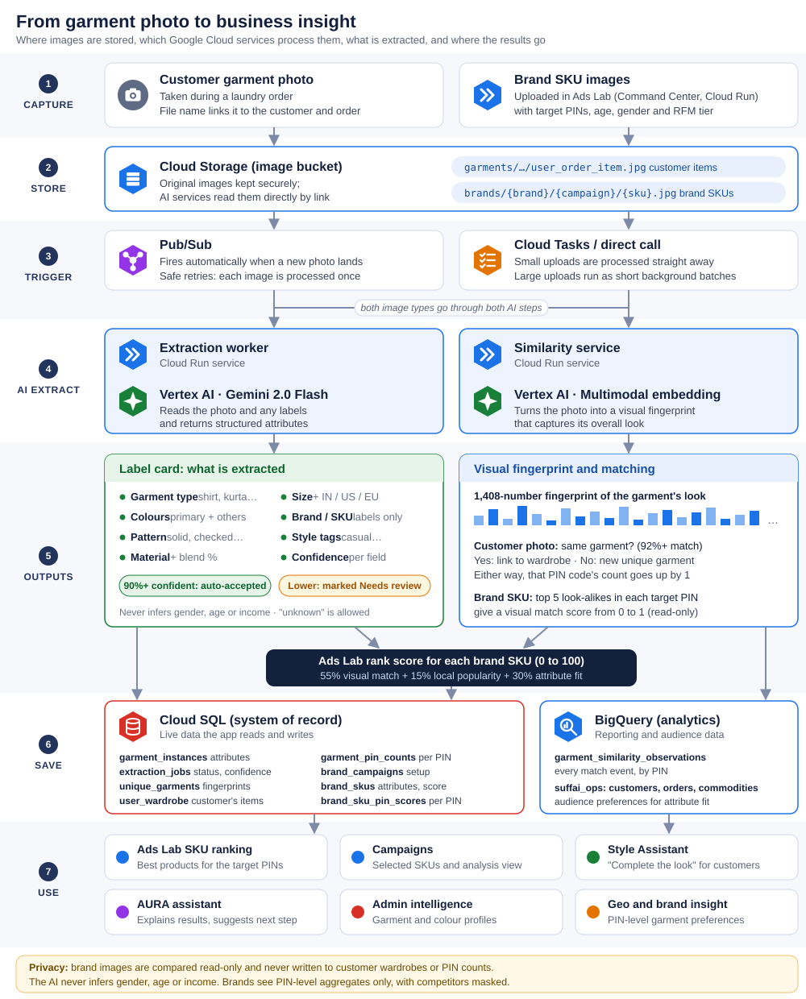

Every garment photo that enters SuffAI, whether it is a customer's item photographed during a laundry order or a product image uploaded by a brand, is turned into two things by Google's AI models:
Plain facts about the garment such as type, colour, pattern, material, size and brand. These are read from the photo and from any care or brand labels visible in it.
A long list of numbers that captures how the garment looks overall: cut, texture, colour mix and style. Two garments that look alike have similar fingerprints, even if their label cards differ.
Lets us answer "how similar is this brand's shirt to what customers in this PIN code already wear?" as a number between 0 and 1.

| Attribute | Possible values (examples) | How it is read |
|---|---|---|
| Garment type | shirt, t-shirt, trouser, jeans, kurta, saree, dress, jacket, hoodie, home linen | Visual, or brand label if visible |
| Primary colour | navy blue, white, maroon ... plus secondary colours | Visual |
| Pattern | solid, striped, checked, printed | Visual |
| Material | cotton, polyester, silk, wool, linen, denim, blend (with % blend when printed) | Care label first; visual guess only as fallback, at lower confidence |
| Size | S / M / L / XL or numeric, with sizing system (IN / US / EU) | Size label only |
| Brand and SKU | Brand name; SKU only if clearly printed | Brand label only. Never guessed. For brand uploads, the brand is set to the uploading brand. |
| Style tags | casual, formal, ethnic ... | Visual |
| Confidence per field | 0.0 to 1.0, plus where it came from (label vs visual) | Reported by the model for every key field |
Images enter through two doors. The extraction step is the same for both; what happens afterwards differs.
Over time this builds a de-duplicated digital wardrobe for each customer and a picture of which garments are worn, and how often, in each PIN code, without counting the same shirt twice when it is washed again.
For each uploaded product, the Ads Lab combines three signals into one score out of 100:
| Signal | Weight | What it means | Comes from |
|---|---|---|---|
| Visual match | 55% | How closely the product's look resembles the garments customers in the chosen PIN codes already own. PINs with more observed garments count for more. | Visual fingerprint |
| Local popularity | 15% | How much of the PIN's observed wardrobe is made up of the product's closest look-alikes, i.e. whether those similar garments are common or rare locally. | Fingerprint + PIN counts |
| Attribute fit | 30% | How well the product's label card matches the selected audience's known preferences for colour, pattern, garment type, material, size and brand. | Label card + audience preferences |
| Attribute | Weight | |
|---|---|---|
| Colour | 25 | |
| Pattern | 20 | |
| Garment type | 20 | |
| Material | 15 | |
| Size | 10 | |
| Brand | 10 |
If a field is unknown for a product (for example size was not readable), that field is left out rather than counted against the product. If the audience filter is too narrow to have preference data, it relaxes to the PIN codes alone.
A brand uploads a navy checked cotton shirt targeting two Bengaluru PIN codes, age 25–34.
| Signal | Result | Contribution |
|---|---|---|
| Visual match | 0.80 (looks very like shirts customers in these PINs own) | 0.55 × 0.80 = 0.44 |
| Local popularity | 0.60 (those look-alikes are fairly common) | 0.15 × 0.60 = 0.09 |
| Attribute fit | 0.70 (navy and checked are popular with this audience) | 0.30 × 0.70 = 0.21 |
| Rank score | 100 × 0.74 = 74 / 100 | |
| Product area | How it uses image features | Who sees it |
|---|---|---|
| Ads Lab: SKU ranking | Ranks a brand's uploaded products for the chosen PIN codes and audience using the score above. Shows each product's label card and score breakdown. | Brand users, Admin |
| Campaigns | The ranked products become the campaign's selection; their attributes and match scores carry into the campaign view and its analysis section. | Brand users, Admin |
| Customer wardrobe | Fingerprints de-duplicate repeat washes of the same garment into one unique item per customer, with the attributes from its label card. | Internal (powers other features) |
| PIN-code garment counts | How many times similar garments are seen in each PIN. Feeds the "local popularity" signal and geographic insight. | Brands (aggregated), Admin |
| Style Assistant | Builds a taste profile from a customer's wardrobe (colours, patterns, materials) and uses fingerprints to suggest brand products that pair with what they own ("Complete the look"). | Customers |
| AURA assistant | Summarises ranking results in chat after a campaign's extraction and ranking finish, and suggests the next step. | Brand users |
| Admin intelligence | Garment attribute tables, colour preference and top garment types on customer profiles. | Admin only |
| Feature extraction | Turning an image into structured information a system can use: here, a label card and a visual fingerprint. |
| Label card / attributes | Human-readable facts about a garment (type, colour, pattern, material, size, brand). |
| Visual fingerprint / embedding | A list of 1,408 numbers describing a garment's overall look. Similar-looking garments have similar fingerprints. |
| Similarity | A 0 to 1 score of how alike two fingerprints are (1 = identical look). |
| Confidence | The model's own 0 to 1 estimate of how sure it is about each attribute. |
| SKU | A single product in a brand's catalogue. |
| RFM tier | Customer segment based on how Recently, how Frequently and how Much they spend. |
| Attribute extraction model | Google Gemini 2.0 Flash on Vertex AI (region asia-south1), JSON output, low temperature for consistency |
| Fingerprint model | Google Vertex AI multimodal embedding (multimodalembedding@001), 1,408 dimensions |
| Auto-accept confidence | 0.90 (below this the result is marked Needs review) |
| Same-garment threshold | 0.92 similarity |
| PIN comparison | Top 5 closest garments per PIN, up to 2,000 candidates per PIN, up to 50 PINs per campaign |
| Services | Extraction worker and Similarity service on Google Cloud Run; images in Cloud Storage; results in Cloud SQL and BigQuery |